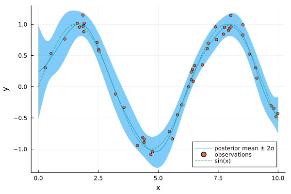

Getting started
This page installs RxGPs, builds a sparse GP regression model and runs inference on it.
Installation
RxGPs needs Julia 1.10 or later and RxInfer.jl 6. It is not yet registered; install it from GitHub, with RxInfer and KernelFunctions.jl, which the kernels come from:
using Pkg
Pkg.add(url = "https://github.com/ReactiveBayes/RxGPs.jl")
Pkg.add(["RxInfer", "KernelFunctions"])The approach
RxGPs implements variational sparse Gaussian processes (VSGPs) as factor nodes:
- A small set of inducing inputs $\mathbf{X}_u = \{x_{u,1}, \ldots, x_{u,M}\}$ summarises the GP.
- The nodes work with the transformed inducing variables $\mathbf{v} = K_{uu}^{-1}\mathbf{u}$, where $\mathbf{u} = f(\mathbf{X}_u)$ and $K_{uu} = k(\mathbf{X}_u, \mathbf{X}_u)$.
- Each observation $y_n$ gets a
UniSGPnode, which connects it to its input $x_n$, the shared $\mathbf{v}$, the noise precision $w$ and the kernel hyperparameters $\theta$. - Variational message passing infers the posteriors of $\mathbf{v}$, $w$ and any uncertain input; $\theta$ is learned by an M-step, outside message passing.
The node's meta, here built by get_UniSGPMeta, is its algorithm: it carries the kernel, the inducing inputs and how to integrate over an uncertain input.
A first regression
Noisy observations of $\sin(x)$ on $[0, 10]$, with fixed kernel hyperparameters:
using RxInfer, RxGPs, KernelFunctions, StableRNGs, Plots
rng = StableRNG(42)
N, M = 50, 15
x_train = sort(10 .* rand(rng, N))
y_train = sin.(x_train) .+ 0.1 .* randn(rng, N)
Xu = collect(range(0, 10; length = M)) # inducing inputs
kernel, θ, _ = get_simple_kernel_and_params(1; kernel_spec = :SE)
meta = get_UniSGPMeta(1; mean_fn = (x) -> 0.0, kernel = kernel, Xu = Xu, θ = θ)
@model function gp_regression(y, x, θ)
v ~ MvNormalMeanCovariance(zeros(M), 100 * diageye(M))
w ~ GammaShapeRate(1.0, 1.0)
for n in eachindex(y)
y[n] ~ UniSGP(x[n], v, w, θ)
end
end
result = infer(
model = gp_regression(θ = θ),
data = (y = y_train, x = x_train),
algorithm = @algorithm(begin UniSGP() -> meta end),
constraints = @constraints(begin q(v, w) = q(v)q(w) end),
initialization = @initialization(begin q(w) = GammaShapeRate(1.0, 1.0) end),
iterations = 10,
free_energy = true,
)
result.free_energy10-element Vector{Float64}:
56.267627411764124
39.20633510582252
34.734058996913404
34.25313916964569
34.22488254402401
34.22356022212011
34.223501807292905
34.22349925906883
34.223499148201995
34.22349914338383The free energy decreases at every iteration. The rules of a UniSGP node take marginals, so the model needs a factorisation of v and w, and an initial marginal for w.
Prediction
predict_GP gives the posterior predictive mean and covariance at new inputs:
q_v = result.posteriors[:v][end]
x_test = collect(range(0, 10; length = 200))
means, covs = predict_GP(m_in = [[x] for x in x_test], q_v = q_v, q_θ = θ, meta = meta)
μ = [m[1] for m in means]
σ = [sqrt(C[1, 1]) for C in covs]
plot(x_test, μ; ribbon = 2σ, label = "posterior mean ± 2σ", xlabel = "x", ylabel = "y")
scatter!(x_train, y_train; label = "observations", markersize = 3)
plot!(x_test, sin.(x_test); label = "sin(x)", linestyle = :dash)
The hyperparameters here are fixed at their initial values. To learn them, alternate inference with gradient steps from grad_llh_default!, building the meta again at each new θ; the usage examples do this.
What's next?
- The three nodes:
UniSGP,UniSGP_dIDandMultiSGP. - Kernel specification and Meta objects.
- The usage examples, with hyperparameter learning and gradient observations, and the notebooks.